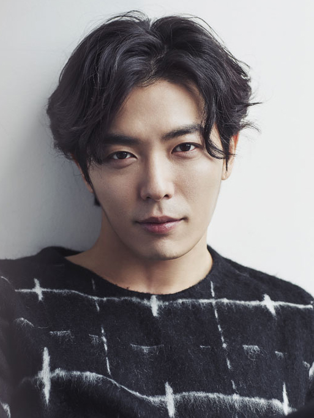

|  |
AboutKim Jae-wook (Korean: 김재욱; born April 2, 1983) is a South Korean model and actor. He is best known for his roles in the hit series Coffee Prince (2007), comedy film Antique (2008), mystery drama Who Are You? (2013), Voice (2017), The Guest (2018), Her Private Life (2019) and Crazy Love (2022). He is fluent in Japanese, and played the role of Sō Takeyuki, the Japanese husband of Princess Deokhye, in the film The Last Princess. LifeKim was born in Seoul, and grew up in Tokyo, Japan until he was seven years old before returning to South Korea. His father worked as a journalist and was transferred to Japan as a foreign correspondent. He started out performing in a band, and began modelling at age 17. Due to the time he spent in Japan, he can speak fluent Japanese. |
FilmographyMovie | Year | Title | Role |
|---|---|---|
| 2006 | Monopoly | |
| 2008 | Antique | Min Sun-woo |
| 2010 | Heart of Gold | Yoo-sung |
| 2010 | Bang | Alex |
| 2015 | C'est Si Bon | Kang Myung-chan |
| 2015 | Planck Constant | Kim Woo-joo |
| 2016 | Two Rooms, Two Nights | In-sung |
| 2016 | The Last Princess | So Takeyuki |
| 2017 | Another Way | Soo-wan |
| 2018 | Butterfly Sleep | Soh Chan-hae |
Television | Year | Title | Role |
|---|---|---|
| 2002 | Rule of Your Own World | Ki-hong |
| 2007 | Coffee Prince | Noh Sun-ki |
| 2007 | Dal-ja's Spring | Choon-ha |
| 2008 | Kingdom of The Winds | Chu Bal-so |
| 2010 | Give Me Your Memory: Pygmalion's Love | Kim Gyeon/td> |
| 2010 | Bad Guy | Hong Tae-sung |
| 2010 | Marry Me, Mary! | Byung Jung-in |
| 2013 | Who Are You? | Lee Hyung-joon |
| 2014 | Inspiring Generation | Kim Soo-ok |
| 2014 | Drama Festival "4teen" | Adult Joon-yi |
| 2015 | Sweet Temptation | Seok-min |
| 2017 | Voice | Mo Tae-gu |
| 2017 | Temperature of Love | Park Jung-woo |
| 2018 | Hand: The Guest | Choi Yoon |
| 2018 | Quiz of God: Reboot | |
| 2019 | Her Private Life | Ryan Gold |
| 2022 | Crazy Love | Noh Go-jin |
Web Series | Year | Title | Role | |||||||||||||||||||||||||
|---|---|---|---|---|---|---|---|---|---|---|---|---|---|---|---|---|---|---|---|---|---|---|---|---|---|---|---|---|
| 2023-2024 | Death's Game | Jung Gyu-cheol | ||||||||||||||||||||||||||
| 2024 | Hong Rang | Grand Prince Hanpyeong |
Theater | Year | Title | Role | |||||||||||||||||||||||||
|---|---|---|---|---|---|---|---|---|---|---|---|---|---|---|---|---|---|---|---|---|---|---|---|---|---|---|---|---|
| 2018 | Amadeus | Wolfgang Amadeus Mozart | ||||||||||||||||||||||||||
| 2021 | Minstrel Park In-hwan | Himself |
Musical | Year | Title | Role | |||||||||||||||||||||||||
|---|---|---|---|---|---|---|---|---|---|---|---|---|---|---|---|---|---|---|---|---|---|---|---|---|---|---|---|---|
| 2011 | Hedwig and the Angry Inch | Hedwig | ||||||||||||||||||||||||||
| 2024 | Paghwa | Tu-woo | ||||||||||||||||||||||||||
Video Games | Year | Title | Role |
|---|---|---|
| 2023 | Like a Dragon Gaiden: The Man Who Erased His Name | Homare Nishitani III |
Awards | Year | Title | Role |
|---|---|---|
| 2007 | 1st Korean Drama Awards | Netizen Popularity Award |
| 2008 | 16th Korean Culture Entertainment Awards | Best New Actor |
| 2008 | Asia Model Awards | Fashionista Award |
| 2013 | Japan's Korean Wave 10th Anniversary Korean TV Drama Awards | Jury Special Award |
| 2017 | SBS Drama Awards | Excellence Awards, Actor in a Monday-Tuesday Drama |
| 2019 | Starhub Night of Stars 2019 | Best Male Asian Star |